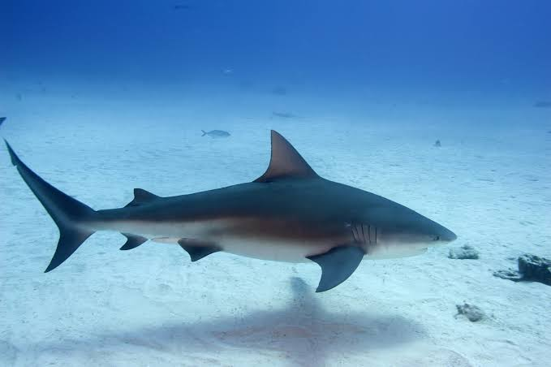
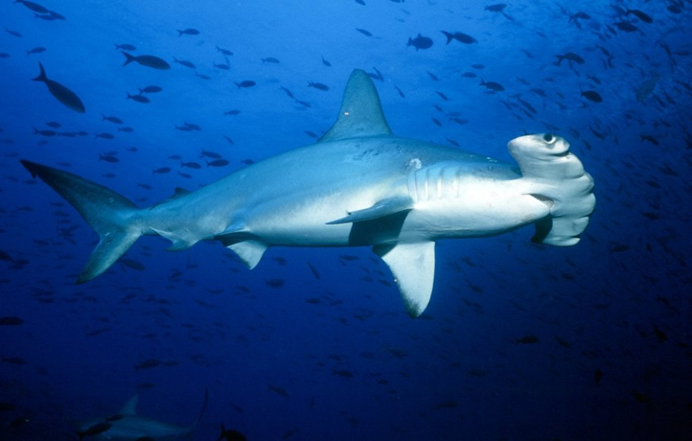
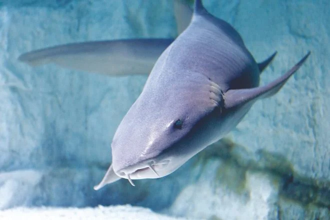
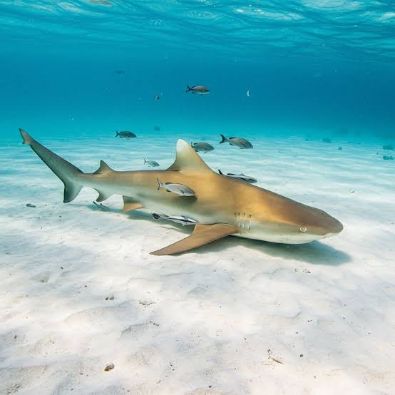
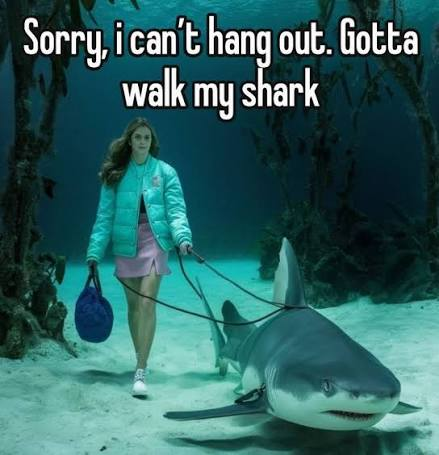

Vítajte! Túto stranku venujem žralokom, lebo mam ich rada.
Zahrnem ich stavbu, taxonomiu, výskyt a populaciu.
Preskúmam štatistiku útokov žralokov na ľudí a ľudí na žralokov.
Žraloky majú rôzne tvary a veľkosti a žijú po celom svete!
Vyskytujú sa vo všetkých moriach a bežne žijú až do hĺbky 2 000 metrov.
Niektoré druhy žijú aj v sladkej vode, napríklad žralok býčí a riečne žraloky.
Medzi vrcholových predátorov patrí niekoľko druhov žralokov vrátane žraloka býčieho,
žraloka tigrovaného a žraloka bieleho!

Žraločie zuby sú uložené v ďasnách, nie sú priamo pripevnené k čeľusti,
a počas celého života sa neustále vymieňajú.
Vo vnútornej časti čeľuste rastie niekoľko radov náhradných zubov,
ktoré sa postupne posúvajú dopredu ako na dopravnom páse.
Niektoré žraloky počas svojho života stratia 30 000 alebo aj viac zubov!
Rýchlosť výmeny zubov sa líši, od raz za 8 až 10 dní až po raz za niekoľko mesiacov.
Oceany, v ktorých žijú žraloky:
Zijú v rôzných podnebiach ako:


Zmysly:
Ľudia lovia žraloky pre ich mäso alebo plutvy.
Mnohé populácie žralokov sú ohrozené ľudskou činnosťou.
Od roku 1970 sa počet žralokov znížil o →71← %,
najmä v dôsledku nadmerného rybolovu a krutých praktík,
ako je odrezávanie žraločích plutiev tzv. “shark finning.”

Žralok citrónový sa vyskytuje hlavne pozdĺž subtropických a tropických
častí atlantického pobrežia Severnej a Južnej Ameriky.Dobre znáša chov v zajatí,
preto patrí medzi najlepšie preskúmané druhy svojej čeľade. Sfarbením je
žltkastý alebo svetlohnedý. Môžu dosahovať až tri metre. Hoci môžeme tento druh
považovať za veľmi nebezpečný, zatiaľ bolo preukázaných iba 6 útokov na človeka týmto žralokom.
Je jeden z najpopularnejšich filmov, kde sa objavili žraloky, konkretne Žralok Modrý.
Je významný aj svojou vynikajúcou hudbou. ↓
Memečka na zaver!
